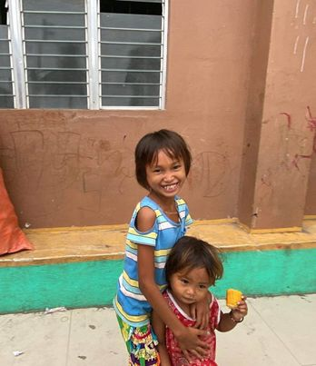
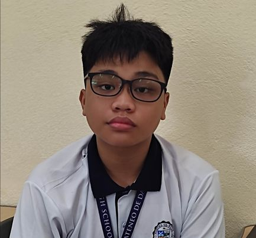

 We started this project off for Academic reasons, but after studying and seeing the problem of the community we decided to help them from the very bottom of our hearts. Our project focuses on providing them with daily necessities, like clothes, hygiene products. We also thought about composting so their trash will help lessen the garbage around their houses, we will use the compost to plants present or will be planted so that they can live in a better environment. When we first came up with ideas on how to help them we didn’t think that their situation would be as bad as not having clothes and not being able to take a bath properly. After visiting them personally we came up with the idea of providing them with those things. We find the study very important as it could be a very big help to the members of our partner institution. As mentioned the kids have no proper clothing. We want to change that, we want to provide them with clothing, and we want to help them because the children will be the ones who’ll make the future.
 William Theodore Panes is a Grade 9 student from the section of Bellarmine. He was one of the people who coded the websites and pages as our group wanted to raise awareness about the lack of daily necessities and simple needs of those in the Badajo community. We thought that coding a website that is eye catching would promote it wonderfully and efficiently. After visiting the community in person we saw how bad their situation is, the children were barely dressed and they looked as if they haven't taken a proper bath. Because of this we wanted to come up with a solution to help them as since their daily needs are very important.